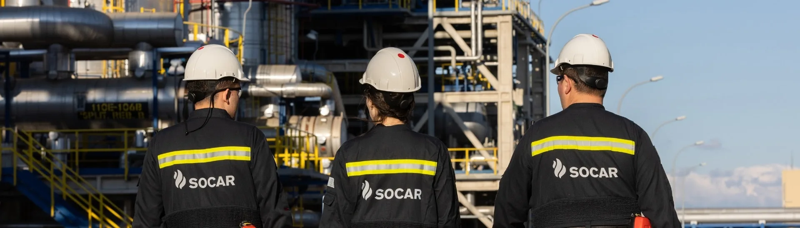
SOCAR Türkiye Kariyer Galerisi — Enerji sektöründe çalışma yaşamı, rafineri, ofis ve saha operasyonlarından görüntüler

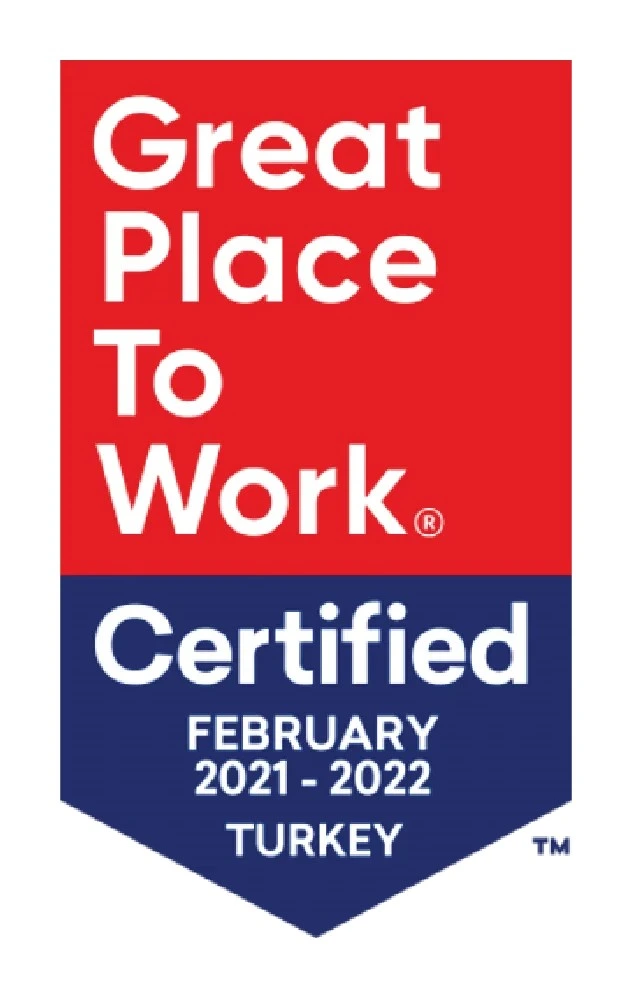
Dünyanın En Değerli Enerjisiyle Büyüyoruz.
En güçlü enerjimiz insandır, kendini yenileyen, yeri doldurulamayan ve geleceği şekillendiren bir güç.
Tutkulu, çevik, kapsayıcı ve uzman profesyonellerle SOCAR Türkiye ailesini birlikte büyütüyoruz.
SOCAR Türkiye Değerlerimiz
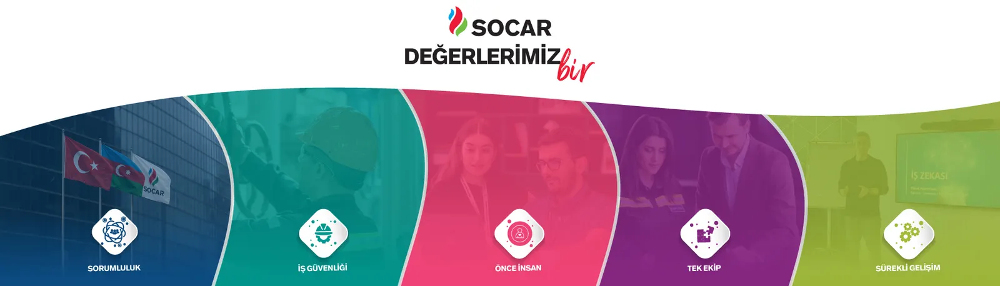
Enerjimiz Çeşitlilik — Kapsayıcılık ve Eşitlik
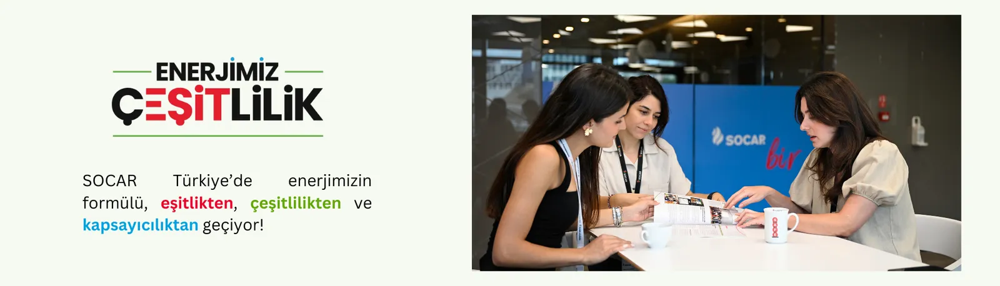
İyiliğiniz Bizim İçin Önemli
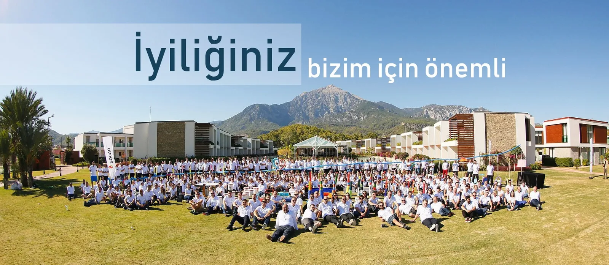
İşte Deneyim — Çalışan Bağlılığı Programı
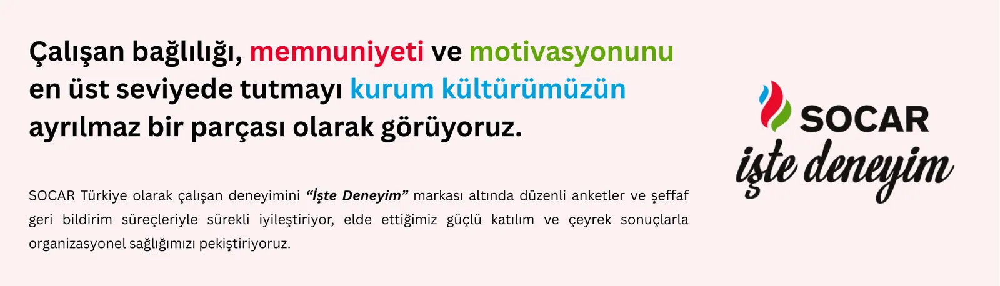
Ödüller, Sertifikalar ve İş Birlikleri
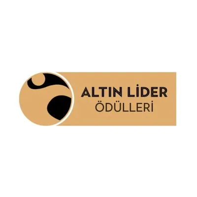
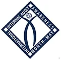
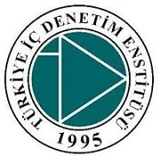
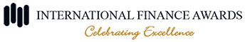
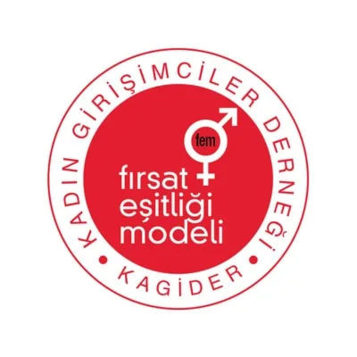